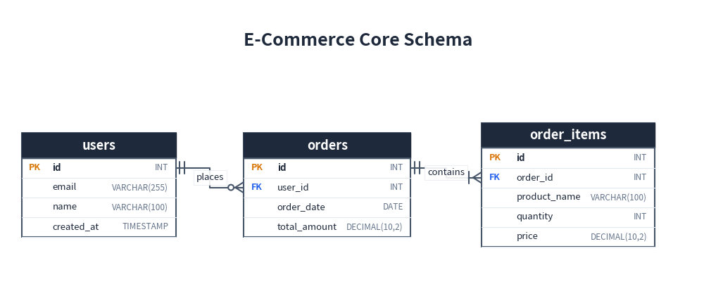
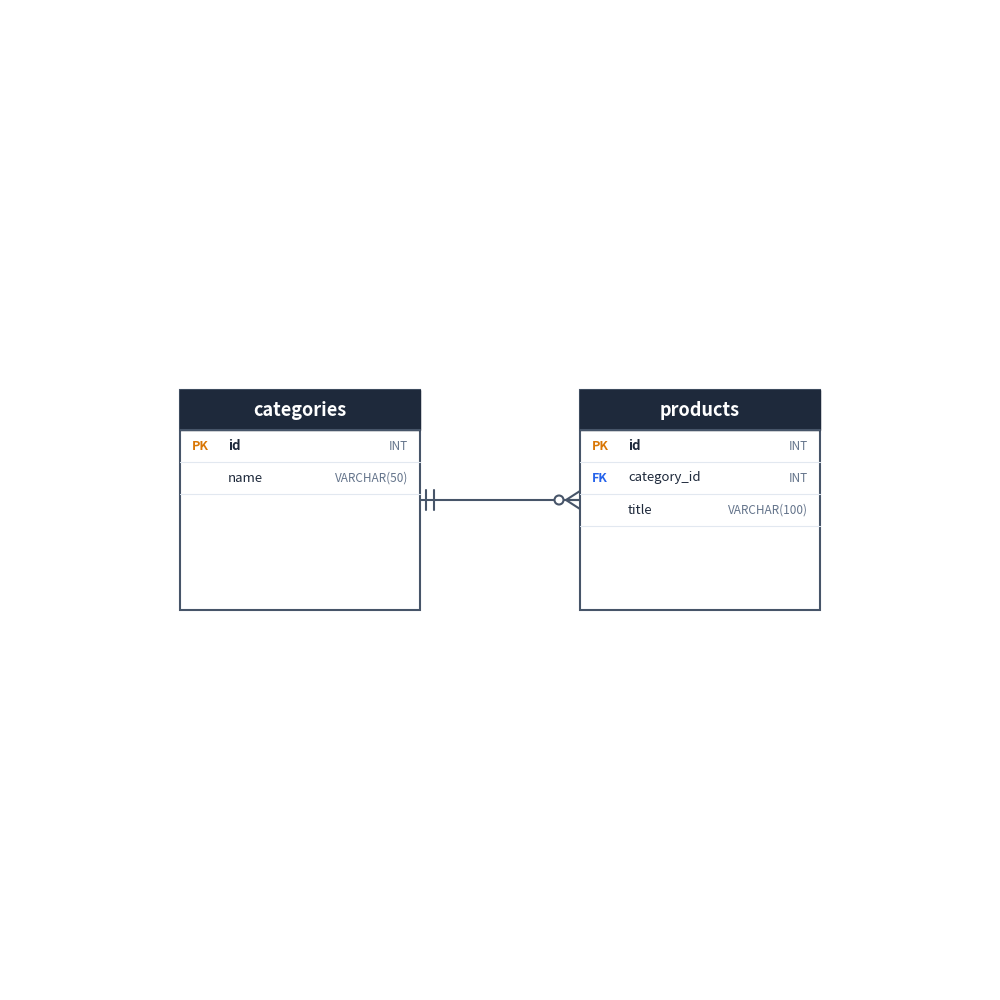
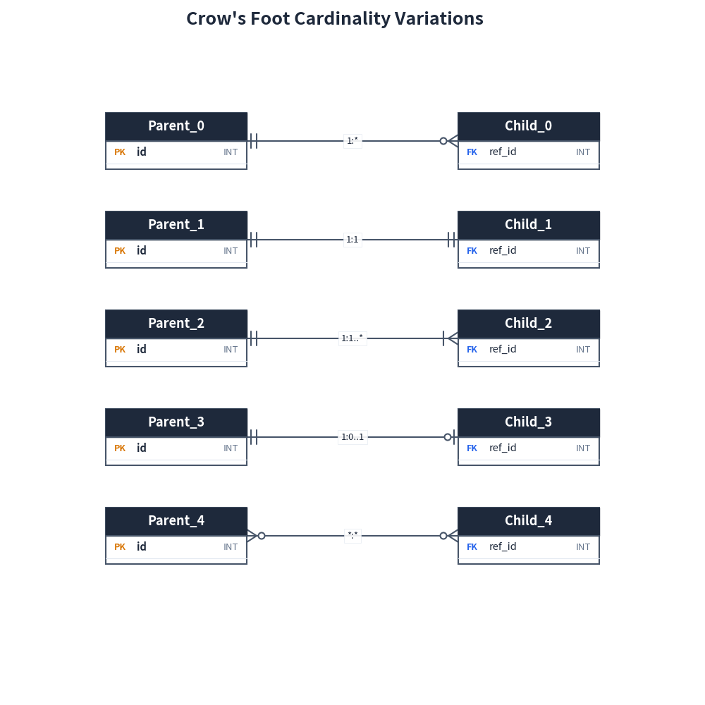
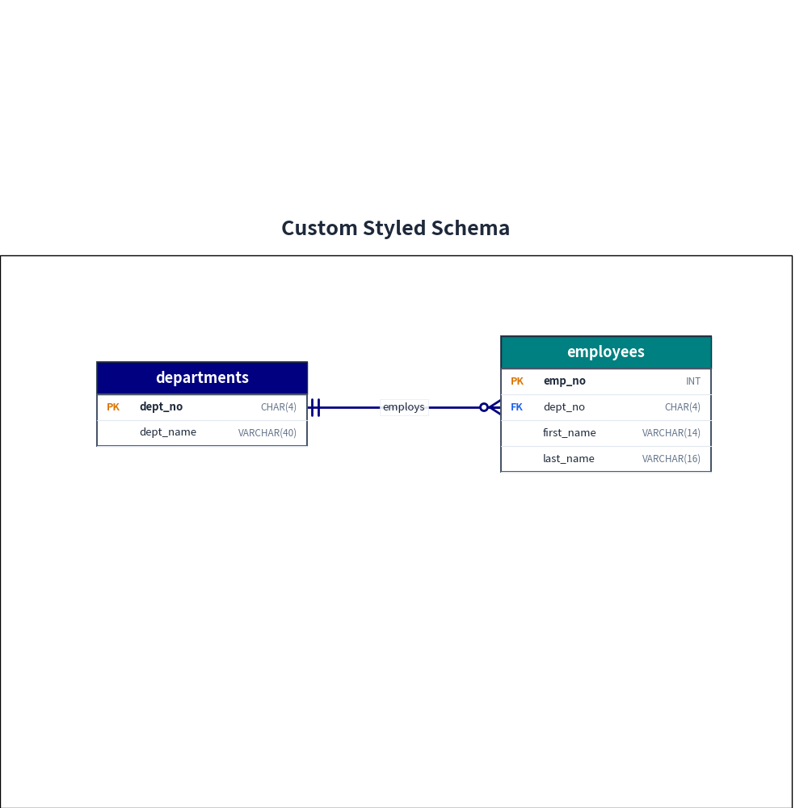

ER Diagrams
drawlib.diagrams.er provides a declarative, pure-Python Entity-Relationship (ER) diagramming framework.
It adheres strictly to IE Notation (Information Engineering / Crow's Foot notation)—the global de-facto standard for relational database modeling.
1. Core Concepts
| Component | Class | Description |
|---|---|---|
| Container | ERDiagram |
Top-level container managing entities, relationships, canvas sizing, and rendering. |
| Table | Entity |
Represents a database table. (x, y) sets the center of the entity card. |
| Connection | Relationship |
An edge connecting two entities with Crow's Foot multiplicity markers. |
2. Quick Start
Below is a relational schema modeling customers, orders, and order items:
from drawlib import canvas
from drawlib.diagrams.er import ERDiagram, Entity
canvas.setup(width=114, height=48)
erd = ERDiagram(title="E-Commerce Core Schema")
# 1. Define Entities
users = erd.add(Entity(name="users", width=25.0), xy=(16.0, 18.0))
users.add_column("id", type="INT", pk=True)
users.add_column("email", type="VARCHAR(255)", nullable=False)
users.add_column("name", type="VARCHAR(100)")
users.add_column("created_at", type="TIMESTAMP")
orders = erd.add(Entity(name="orders", width=27.0), xy=(53.0, 18.0))
orders.add_column("id", type="INT", pk=True)
orders.add_column("user_id", type="INT", fk=True)
orders.add_column("order_date", type="DATE")
orders.add_column("total_amount", type="DECIMAL(10,2)")
items = erd.add(Entity(name="order_items", width=28.0), xy=(92.0, 18.0))
items.add_column("id", type="INT", pk=True)
items.add_column("order_id", type="INT", fk=True)
items.add_column("product_name", type="VARCHAR(100)")
items.add_column("quantity", type="INT")
items.add_column("price", type="DECIMAL(10,2)")
# 2. Connect Relationships
# users (1) to orders (0 or more)
users.connect(
orders,
cardinality="1:*",
start_side="right",
end_side="left",
start_column="id",
end_column="user_id",
label="places",
)
# orders (1) to items (1 or more)
orders.connect(
items,
cardinality="1:1..*",
start_side="right",
end_side="left",
start_column="id",
end_column="order_id",
label="contains",
)
erd.draw(xy=(0.0, 0.0))

3. Entity Configuration
3.1 Adding Columns
Columns can be added individually with add_column() or in batch using add_columns():
entity = Entity(name="products", width=26.0)
# Individual addition (fluent API)
entity.add_column("id", type="INT", pk=True)
entity.add_column("sku", type="VARCHAR(64)", nullable=False)
# Batch addition
entity.add_columns([
("price", "DECIMAL(10,2)"),
("stock", "INT", False, False, True), # (name, type, pk, fk, nullable)
])
3.2 Sizing and Blank Margins
The placement coordinate xy=(cx, cy) in erd.add(entity, xy=...) defines the center of the entity.
Entities automatically compute their height based on the number of columns. You can also specify an explicit fixed height (or size=(width, height)). If the specified height is larger than the content, the extra vertical space is left as a clean, blank background area:
from drawlib import canvas
from drawlib.diagrams.er import ERDiagram, Entity
canvas.setup(width=90, height=48)
erd = ERDiagram()
# Specify a fixed height larger than content
categories = erd.add(Entity(name="categories", width=24.0, height=20.0), xy=(22.0, 20.0))
categories.add_column("id", type="INT", pk=True)
categories.add_column("name", type="VARCHAR(50)")
products = erd.add(Entity(name="products", width=24.0, height=20.0), xy=(68.0, 20.0))
products.add_column("id", type="INT", pk=True)
products.add_column("category_id", type="INT", fk=True)
products.add_column("title", type="VARCHAR(100)")
categories.connect(products, cardinality="1:*", start_side="right", end_side="left")
erd.draw(xy=(0.0, 0.0))

4. Cardinality Notations (IE / Crow's Foot)
Drawlib provides strict type support via Literal for standard IE Crow's Foot cardinalities:
| Cardinality | Start Marker | End Marker | Description |
|---|---|---|---|
"1:*" |
Exactly 1 (||) |
Zero or more (o<) |
Standard One-to-Many (default) |
"1:1" |
Exactly 1 (||) |
Exactly 1 (||) |
One-to-One |
"1:1..*" |
Exactly 1 (||) |
One or more (|<) |
Mandatory Child |
"1:0..1" |
Exactly 1 (||) |
Zero or one (o|) |
Optional One-to-One |
"0..1:1" |
Zero or one (o|) |
Exactly 1 (||) |
Optional Parent |
"0..1:*" |
Zero or one (o|) |
Zero or more (o<) |
Optional One-to-Many |
"*:*" |
Zero or more (o<) |
Zero or more (o<) |
Many-to-Many |
from drawlib import canvas
from drawlib.diagrams.er import ERDiagram, Entity, Cardinality
canvas.initialize()
cardinalities: list[Cardinality] = [
"1:*",
"1:1",
"1:1..*",
"1:0..1",
"*:*",
]
erd = ERDiagram(title="Crow's Foot Cardinality Variations")
for idx, card in enumerate(cardinalities):
y = 80.0 - idx * 14.0
src = erd.add(Entity(name=f"Parent_{idx}", width=20.0, height=8.0), xy=(25.0, y))
src.add_column("id", type="INT", pk=True)
tgt = erd.add(Entity(name=f"Child_{idx}", width=20.0, height=8.0), xy=(75.0, y))
tgt.add_column("ref_id", type="INT", fk=True)
src.connect(tgt, cardinality=card, label=card)
erd.draw()

5. Routing and Anchoring
5.1 Orthogonal Routing
By default, relationships use smart right-angled (orthogonal) routing (routing="orthogonal"), generating clean Z-bends and L-bends. You can also specify routing="direct" for direct straight lines.
5.2 Attachment Sides
Sides can be explicitly chosen using start_side and end_side:
"left","right","top","bottom", or"auto"(default).
When "auto" is used, Drawlib automatically determines the nearest opposite sides based on relative entity positions.
5.3 Column-Level Anchoring
To connect a relationship directly to specific columns, pass start_column and/or end_column. When connecting from the left or right side, the edge aligns with the vertical center of the designated column row:
users.connect(
orders,
cardinality="1:*",
start_side="right",
end_side="left",
start_column="id", # Line connects to 'id' row in users
end_column="user_id", # Line connects to 'user_id' row in orders
)
6. Custom Styling
Entities and relationships fully integrate with Drawlib's Style class:
from drawlib import canvas
from drawlib.colors import Colors
from drawlib.diagrams.er import ERDiagram, Entity
from drawlib.types import Style
canvas.setup(width=90, height=48)
erd = ERDiagram(
title="Custom Styled Schema",
style=Style(shape_fill_color=Colors.White),
)
# Custom header colors
departments = erd.add(
Entity(
name="departments",
width=26.0,
header_style=Style(shape_fill_color=Colors.Navy, text_color=Colors.White),
),
xy=(20.0, 18.0),
)
departments.add_column("dept_no", type="CHAR(4)", pk=True)
departments.add_column("dept_name", type="VARCHAR(40)")
employees = erd.add(
Entity(
name="employees",
width=26.0,
header_style=Style(shape_fill_color=Colors.Teal, text_color=Colors.White),
),
xy=(68.0, 18.0),
)
employees.add_column("emp_no", type="INT", pk=True)
employees.add_column("dept_no", type="CHAR(4)", fk=True)
employees.add_column("first_name", type="VARCHAR(14)")
employees.add_column("last_name", type="VARCHAR(16)")
departments.connect(
employees,
cardinality="1:*",
start_side="right",
end_side="left",
start_column="dept_no",
end_column="dept_no",
label="employs",
style=Style(line_color=Colors.Navy, line_width=2.0),
)
erd.draw(xy=(0.0, 0.0))

© 2026 drawlib by Yuichi Ito. Released under the Apache 2.0 License.